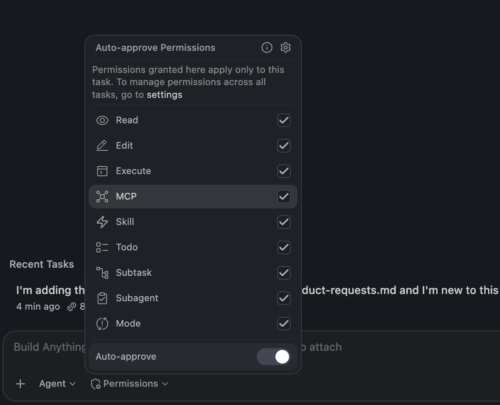
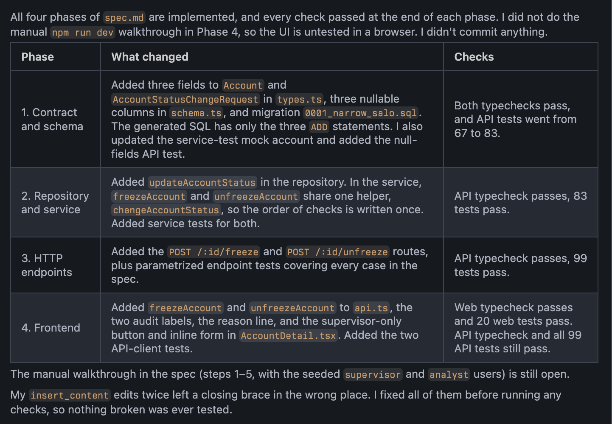

Module 2: Spec Implementation¶
One prompt, a new session, and a few minutes of watching. The spec from Module 1 does the work; you supervise against it.
Your design decisions are already in the spec. Human ownership here means holding the agent to it, not re-deciding.
Everything in a grey code block is pasted to Bob verbatim. The Expect and Notice notes describe what a good run looks like.
Before you start
requirements.mdis marked decided andspec.mdhas its phases and traceability table. Nothing else from Module 1 carries forward.git statusshows only those two files as new. Everything else is clean. That clean tree is your undo button for this module.- The app is not running (
Ctrl+Connpm run devif it is). The tests don't need it, and a dev server holding the database open can confuse a migration.
1. Start a fresh session¶
Click New task in the Bob panel. Do not continue the Module 1 conversation.
Why. Module 1's conversation holds everything the agent picked up along the way: subagent summaries, dead ends, earlier drafts, your interview answers.
- Run Module 2 in that session and you can't tell whether it built from the spec or from memory.
- Run it fresh and
spec.mdhas to carry the work on its own. The spec is the handoff; a cold context is what forces it to be one. If the build goes wrong, the spec was missing something, and that's a spec fix. - This is also the real case: the person implementing is often not the person who wrote the spec, and that session is gone.
2. Set the guardrails¶

Set the mode selector to Agent. In the Permissions dropdown, turn on the master Auto-approve switch. Bob will not ask you anything until it's done or stuck.
Why everything. Each phase is several file edits and at least one test run. Approving by hand turns a short build into a long clicking exercise, and you stop reading the cards after the fifth. This is the highest-autonomy stretch of the workshop, and you've earned it: every decision that reached this point went through you.
What's actually protecting you. Not the permissions. Three things:
AGENTS.mdsays do not commit or push unless asked, so nothing leaves your working tree.- The tree was clean, so
git restore .undoes everything. - The spec's per-phase checks give you a place to stop after every phase.
Permissions decide how often Bob asks. Those three decide how much damage a bad run can do.
3. Hand it the spec¶
Autonomy is highest here and human ownership lowest. What's left is implementation detail, and that's the agent's to hammer out on its own.

Expect. Bob reads spec.md, AGENTS.md, and the files the first phase names. Then, for each phase:
- the edits the phase lists
- that phase's checks, run
- a short report: what changed, which check ran, pass or fail
At the end, a summary of what every phase changed. A few things look like trouble and aren't: a check that fails once and gets fixed and rerun (that's the loop working), and a long pause on the first phase while it reads.
Why the prompt is short. Everything that would normally go in a long implementation prompt is already in the files Bob reads. The spec says what to build and how to check it. AGENTS.md says how code is written here, which commands to run, and what not to do. The prompt only has to say follow the spec and stop and check at each phase boundary. If you find yourself adding instructions to this prompt, they belong in one of those two files instead.
Why "report before moving to the next." Without it Bob still runs the checks but tends to batch the reporting at the end. With it, every phase boundary becomes a point where you can read a short report and decide to let it continue. You are not approving each phase (Auto-approve is on), but you can interrupt at any boundary.
The loop¶
What you're watching is a loop, and naming its parts is what lets you reason about it when it misbehaves:
| Part | In this run |
|---|---|
| Goal | The current phase's Changes and Satisfies lines in spec.md |
| Act | Edit the named files, write the named tests |
| Observe | Run that phase's how-to-check commands |
| Decide | Green → next phase. Red → read the output, fix, run again |
| Carry forward | Only what the next phase needs: the spec, the files on disk, the test results |
The spec is the loop condition. A phase is done when its checks pass, and the agent can't declare itself done any other way. Compare that with an agent given "implement the freeze feature" and no spec: the loop has no exit condition except the agent's own opinion that it's finished.
Notice.
- The reports stay short. Bob reads a great deal while building, but the summary at each boundary is a few lines. That's the same context discipline as Module 1's subagents, applied inside one session.
- Where it runs tests. If it runs
npm test -w apiafter a web change, or runs the whole suite after every edit, the spec's how-to-check section was too loose. Note it; that's a Module 1 fix for next time. - The context counter. It climbs through the run. If a phase fails repeatedly, the counter is the first thing to check: an agent with several failed attempts in its context tends to repeat them.
4. Supervise against the spec¶
You're not reviewing code yet. You're checking that each phase report matches what the spec said that phase would do. Keep spec.md open beside the chat.
Three things to compare at each boundary:
- Files. The report names the files it changed. The spec's Changes list names the files it should have. Same list?
- Check. The report names the command it ran. The spec's how-to-check section names the command. Same command, and did it actually pass, or did Bob say "tests pass" without output?
- Scope. Anything in the report the spec didn't ask for? A refactor, an extra endpoint, a helpful improvement. Those are the things that break later.
If a phase drifts¶
Expect. Bob rereads the phase, undoes or adjusts the extra work, reruns the check, and reports again.
Why "don't change the spec." An agent that notices a mismatch between its work and the spec will sometimes resolve it by editing the spec. That erases the evidence and makes the next phase build on the drift. The spec is the contract; if it's wrong, you change it deliberately in Module 1's terms, not as a side effect of a fix.
If a phase fails and keeps failing¶
Let it try twice. On the third red run, stop it and read the failure output yourself. Usually it's one of:
- the spec's check references a test the changes never created (spec fix)
- a command can't run because something is still holding a resource, usually the dev server (stop it, rerun)
- a type error in a file the spec didn't name (one-line hint to Bob)
If it derails¶
Rollback (the icon on your message in the chat) undoes what Bob did in this task. git restore . undoes everything in tracked files regardless of which task did it. Run git clean -n to list new untracked files; delete by hand only the ones Bob created. Then start a new task and paste the prompt again.
Never git clean -f or git clean -fd
It deletes every untracked file, including requirements.md, spec.md, api/.env and the database. There is no undo. git clean -n with the n lists without deleting; that's the only form to use here.
5. Confirm the finish¶
When Bob reports the last phase green, run the checks yourself in the terminal:
Green, green, and a git status that shows changes only under api/ and web/ plus the migration folder.
Start the app (npm run dev), log in as a supervisor, open an account, and freeze it. The status badge changes, the reason shows, the audit log has an entry. Unfreeze it. Thirty seconds.
Leave everything uncommitted. Module 3 reviews the working tree against main.
What this module demonstrated¶
- A fresh session proves the spec carries the implementation. Nothing learned in Module 1's conversation was needed.
- The implementation prompt is short because the spec and
AGENTS.mdare not. Instructions you'd put in the prompt belong in those files. - Autonomy is set by three things: what the agent is forbidden to do (
AGENTS.md), what can be undone (clean tree,git restore .), and where it must stop and report (phase boundaries). Permissions only set how often it asks. You earned that autonomy in Module 1; here you enforce it. - A loop needs an exit condition the agent doesn't control. Here that's the spec's checks.
- Supervising means comparing reports to the spec, not reading code. The code review is Module 3.